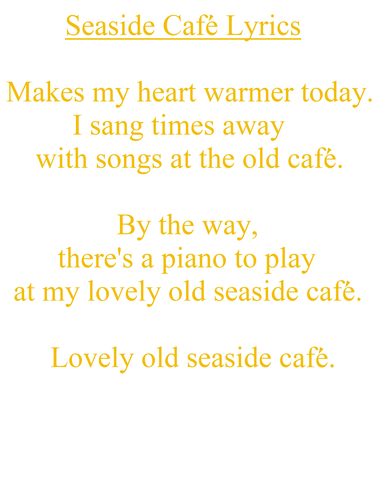

October 10th,2021
Cover of Song & Artwork
A song with a heart warming piano solo. A short (at 33 words) but complete song. Click below for vocal guide or audio covers.
October 10th,2021
Sheet Music & Backing

Click below to get sheet music PDF and backing. The song can be played on two pianos or equivalently on one piano.
The project is about a set of new songs I am continually involved in writing, though instead of releasing the songs with an artist singing it, the song is released as sheet music with backing track,vocal guide with no artist-so you are the Artist. The vocal guide is,of course, not the artist singing the song. The project is ongoing. So more songs so the songbook is continually expanding.
This is a new sort of digital music project and it can be thought of as an alternative to releasing a single, album or another sort of commercial release; the project can be thought of as a continually expanding digital songbook (sheet music PDF+backing track+vocal guide) of commercial quality songs.
The piano sheet music of all the songs are given but , at some future time, the notated versions of the piano and/or guitar version of the songs will be given.
Catchy new original songs for you to hear or you to perform.